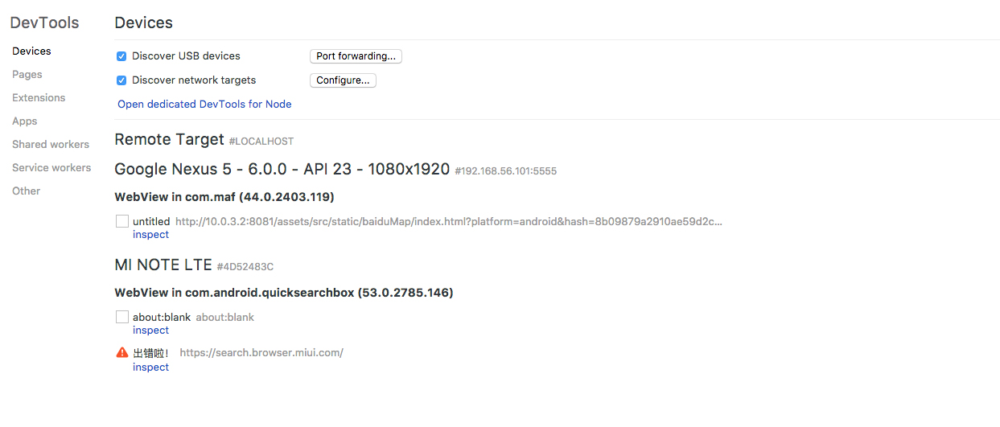

React Native Version:0.51
RN 在 0.37 版本中加入了WebView功能，所以想要在使用WebView,版本必须>=0.37，发送的 message 只能是字符串，所以需要将其他格式的数据转换成字符串，在接收到后再转换回去，其实直接用JSON.stringify和JSON.parse就可以
加载 html
source属性用于指定加载的 html，可以加载在线的页面，也可以加载本地的页面，代码如下：
// 加载线上页面
<Webview
source={{uri: 'http://www.mi.com'}}
/>
// 加载本地html文件
<WebView
source={require('../src/html/index.html')}
/>
注意 ⚠️
在 RN 中可以加载 WebView，但是无法调试，也不能使用 alert 来验证代码 js 代码是否运行成功，只能通过往 html 写入东西（innerHTML）来验证 js 是否运行成功
WebView 与 html 的通信
webview 发送信息到 html
WebView 给 html 发送信息需要使用postMessage，而 html 接收 RN 发过来的信息需要监听message事件，代码如下：
// RN
class WebViewExample extends Component {
onLoadEnd = () => {
this.refs.webview.postMessage = 'this is RN msg'
}
render() {
return (
<WebView
ref="webview"
source={require('../html/index.html')}
onLoadEnd={this.onLoadEnd}
/>
)
}
}
export default WebViewExample
// web
window.document.addEventListener('message', function(e) {
const message = e.data
})
这里需要注意一点
postMessage需要在 webview 加载完成之后再去 post，如果放在commponentWillMount里由于页面没有加载完成就 post 信息，会导致 html 端无法监听到 message 事件。
html 发送信息到 webview
// RN
class WebViewExample extends Component {
handleMessage = e => {
const message = e.nativeEvent.data
}
render() {
return (
<WebView
ref="webview"
source={require('../html/index.html')}
onMessage={e => this.handleMessage(e)}
/>
)
}
}
export default WebViewExample
// web
window.postMessage('this is html msg')
debug
RN 中 debug webview 和安卓开发中看起来是差不多的，连接好设备后，在 chrome 中输入
chrome://inspect
就可以看到安卓设备上正在运行的 webview 了，点击inspect就会开启一个调试页面，就可以进行 debug 了，RN 似乎默认开启了 debug 调试，直接就可以看到 webview 中输出的信息。

但是我发现我打开的调试界面是一个错乱的界面，不知道为什么，无奈–！

注意 ⚠️
这里需要注意一点的，由于安卓版本的差异，所以内部的 webview 对 js 的支持程度也不同，为了保证兼容性，如果使用了 ES6，请转成 ES5，否则会报错